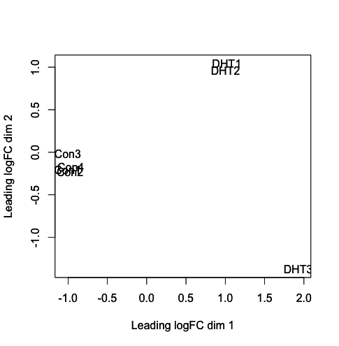
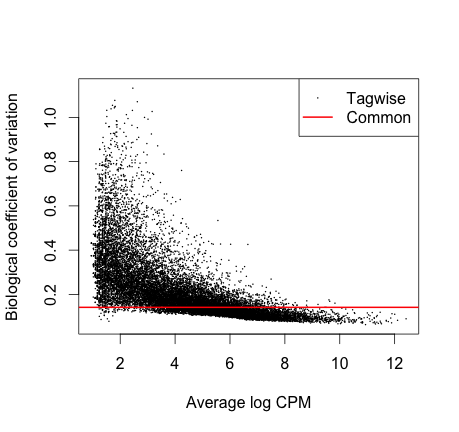
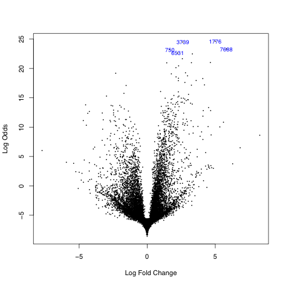
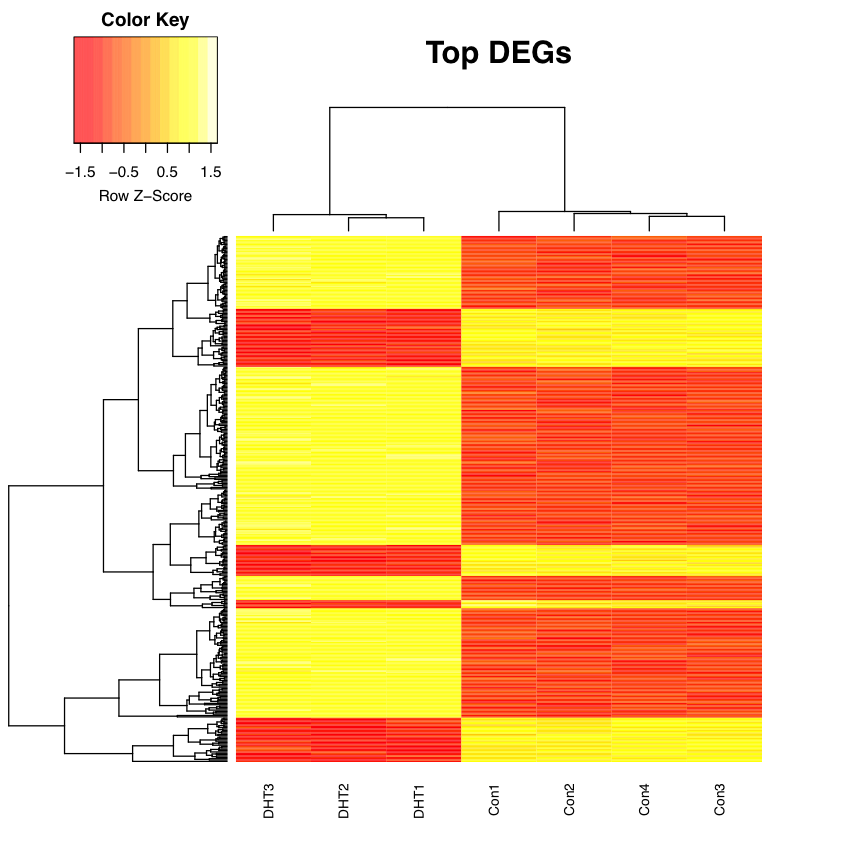

RNA-Seq
Key Learning Outcomes
After completing this practical the trainee should be able to:
-
Understand and perform a simple RNA-Seq analysis workflow.
-
Perform spliced alignments to an indexed reference genome using TopHat.
-
Visualize spliced transcript alignments in a genome browser such as IGV.
-
Be able to identify differential gene expression between two experimental conditions.
-
Be familiar with R environment and be able to run R based RNA-seq packages.
We also have bonus exercises where you can learn to:
-
Perform transcript assembly using Cufflinks.
-
Run cuffdiff, a Cufflinks utility for differential expression analysis.
-
Visualize transcript alignments and annotation in a genome browser such as IGV.
Resources You’ll be Using
Tools Used
Tophat : \ https://ccb.jhu.edu/software/tophat/index.shtml
Cufflinks : \ http://cole-trapnell-lab.github.io/cufflinks/
Samtools : \ http://www.htslib.org/
BEDTools : \ https://github.com/arq5x/bedtools2
UCSC tools : \ http://hgdownload.cse.ucsc.edu/admin/exe/
IGV : \ http://www.broadinstitute.org/igv/
FeatureCount : \ http://subread.sourceforge.net/
edgeR pakcage : \ https://bioconductor.org/packages/release/bioc/html/edgeR.html
CummeRbund manual : \ http://www.bioconductor.org/packages/release/bioc/vignettes/cummeRbund/inst/doc/cummeRbund-manual.pdf
Sources of Data
http://www.ebi.ac.uk/ena/data/view/ERR022484\ http://www.ebi.ac.uk/ena/data/view/ERR022485\ http://www.pnas.org/content/suppl/2008/12/16/0807121105.DCSupplemental
Introduction
The goal of this hands-on session is to perform some basic tasks in the downstream analysis of RNA-seq data.\
First we will use RNA-seq data from zebrafish. You will align one set of reads to the zebrafish using Tophat2. You will then view the aligned reads using the IGV viewer. We will also demonstrate how gene counts can be derived from this data. You will go on to assembly a transcriptome from the read data using cufflinks. We will show you how this type of data may be analysed for differential expression.
The second part of the tutorial will focus on RNA-seq data from a human experiment (cancer cell line versus normal cells). You will use the Bioconductor packages edgeR and voom (limma) to determine differential gene expression. The results from this analysis will then be used in the final session which introduces you to some of the tools used to gain biological insight into the results of a differential expression analysis
Prepare the Environment
We will use a dataset derived from sequencing of mRNA from Danio rerio
embryos in two different developmental stages. Sequencing was performed
on the Illumina platform and generated 76bp paired-end sequence data
using polyA selected RNA. Due to the time constraints of the practical
we will only use a subset of the reads.
The data files are contained in the subdirectory called data and are
the following:
2cells_1.fastq and 2cells_2.fastq
: \
These files are based on RNA-seq data of a 2-cell zebrafish embryo
6h_1.fastq and 6h_2.fastq
: \
These files are based on RNA-seq data of zebrafish embryos 6h post
fertilization
Open the Terminal and go to the rnaseq working directory:
cd /home/trainee/rnaseq/
All commands entered into the terminal for this tutorial should be from
within the /home/trainee/rnaseq directory.
Check that the data directory contains the above-mentioned files by
typing:
ls data
Alignment
There are numerous tools for performing short read alignment and the choice of aligner should be carefully made according to the analysis goals/requirements. Here we will use Tophat2, a widely used ultrafast aligner that performs spliced alignments.
Tophat2 is based on the Bowtie2 aligner and uses an indexed genome for
the alignment to speed up the alignment and keep its memory footprint
small. The the index for the Danio rerio genome has been created for
you.
The command to create an index is as follows. You DO NOT need to run this command yourself - we have done this for you.
bowtie2-build genome/Danio_rerio.Zv9.66.dna.fa genome/ZV9
Tophat2 has a number of parameters in order to perform the alignment. To view them all type:
tophat2 --help
The general format of the tophat2 command is:
tophat2 [options]* <index_base> <reads_1> <reads_2>
Where the last two arguments are the .fastq files of the paired end
reads, and the argument before is the basename of the indexed genome.
The quality values in the FASTQ files used in this hands-on session are
Phred+33 encoded. We explicitly tell tophat of this fact by using the
command line argument –solexa-quals.
You can look at the first few reads in the file data/2cells_1.fastq
with:
head -n 20 data/2cells_1.fastq
Some other parameters that we are going to use to run Tophat are listed below:
-g : Maximum number of multihits allowed. Short reads are likely to map to more than one location in the genome even though these reads can have originated from only one of these regions. In RNA-seq we allow for a limited number of multihits, and in this case we ask Tophat to report only reads that map at most onto 2 different loci.
–library-type : Before performing any type of RNA-seq analysis you need to know a few things about the library preparation. Was it done using a strand-specific protocol or not? If yes, which strand? In our data the protocol was NOT strand specific.
-j
: Improve spliced alignment by providing Tophat with annotated splice
junctions. Pre-existing genome annotation is an advantage when
analysing RNA-seq data. This file contains the coordinates of
annotated splice junctions from Ensembl. These are stored under the
sub-directory annotation in a file called ZV9.spliceSites.
-o : This specifies in which subdirectory Tophat should save the output files. Given that for every run the name of the output files is the same, we specify different directories for each run.
It takes some time (approx. 20 min) to perform tophat spliced
alignments, even for this subset of reads. Therefore, we have
pre-aligned the 2cells data for you using the following command:
You DO NOT need to run this command yourself - we have done this for you.
tophat2 --solexa-quals -g 2 --library-type fr-unstranded -j annotation/Danio_rerio.Zv9.66.spliceSites -o tophat/ZV9_2cells genome/ZV9 data/2cells_1.fastq data/2cells_2.fastq
Align the 6h data yourself using the following command:
# Takes approx. 20mins tophat2 --solexa-quals -g 2 --library-type fr-unstranded -j annotation/Danio_rerio.Zv9.66.spliceSites -o tophat/ZV9_6h genome/ZV9 data/6h_1.fastq data/6h_2.fastq
The 6h read alignment will take approx. 20 min to complete. Therefore,
we’ll take a look at some of the files, generated by tophat, for the
pre-computed 2cells data.
Tophat generates several files in the specified output directory. The most important files are listed below.
accepted_hits.bam : This file contains the list of read alignments in BAM format.
align_summary.txt : Provides a detailed summary of the read-alignments.
unmapped.bam : This file contains the unmapped reads.
The complete documentation can be found at: https://ccb.jhu.edu/software/tophat/manual.shtml
Alignment Visualisation in IGV
The Integrative Genomics Viewer (IGV) is able to provide a visualisation
of read alignments given a reference sequence and a BAM file. We’ll
visualise the information contained in the accepted_hits.bam and
junctions.bed files for the pre-computed 2cells data. The former,
contains the tophat spliced alignments of the reads to the reference
while the latter stores the coordinates of the splice junctions present
in the data set.
Open the rnaseq directory on your Desktop and double-click the
tophat subdirectory and then the ZV9_2cells directory.
-
Launch IGV by double-clicking the “IGV 2.3.*” icon on the Desktop (ignore any warnings that you may get as it opens). NOTE: IGV may take several minutes to load for the first time, please be patient.
-
Choose “Zebrafish (Zv9)” from the drop-down box in the top left of the IGV window. Else you can also load the genome fasta file.
-
Load the
accepted_hits.sorted.bamfile by clicking the “File” menu, selecting “Load from File” and navigating to theDesktop/rnaseq/tophat/ZV9_2cellsdirectory. -
Rename the track by right-clicking on its name and choosing “Rename Track”. Give it a meaningful name like “2cells BAM”.
-
Load the
junctions.bedfrom the same directory and rename the track “2cells Junctions BED”. -
Load the Ensembl annotations file
Danio_rerio.Zv9.66.gtfstored in thernaseq/annotationdirectory. -
Navigate to a region on chromosome 12 by typing
chr12:20,270,921-20,300,943into the search box at the top of the IGV window.
Keep zooming to view the bam file alignments
Some useful IGV manuals can be found below
http://www.broadinstitute.org/software/igv/interpreting_insert_size\ http://www.broadinstitute.org/software/igv/alignmentdata
Does the file ’align_summary.txt’ look interesting? What information does it provide?
As the name suggests, the file provides a details summary of the alignment statistics.
One other important file is ’unmapped.bam’. This file contains the unampped reads.
Can you identify the splice junctions from the BAM file?
Splice junctions can be identified in the alignment BAM files. These are the aligned RNA-Seq reads that have skipped-bases from the reference genome (most likely introns).
Are the junctions annotated for CBY1 consistent with the annotation?
Read alignment supports an extended length in exon 5 to the gene model (cby1-001)
Once tophat finishes aligning the 6h data you will need to sort the alignments found in the BAM file and then index the sorted BAM file.
samtools sort tophat/ZV9_6h/accepted_hits.bam tophat/ZV9_6h/accepted_hits.sorted samtools index tophat/ZV9_6h/accepted_hits.sorted.bam
Load the sorted BAM file into IGV, as described previously, and rename the track appropriately.
Generating Gene Counts
In RNAseq experiments the digital gene expression is recorded as the
gene counts or number of reads aligning to a known gene feature. If you
have a well annotated genome, you can use the gene structure file in a
standard gene annotation format (GTF or GFF)) along with the spliced
alignment file to quantify the known genes. We will demonstrate a
utility called FeatureCounts that comes with the Subread package.
mkdir gene_counts featureCounts -a annotation/Danio_rerio.Zv9.66.gtf -t exon -g gene_id -o gene_counts/gene_counts.txt tophat/ZV9_6h/accepted_hits.sorted.bam tophat/ZV9_2cells/accepted_hits.sorted.bam
Isoform Expression and Transcriptome Assembly
For non-model organisms and genomes with draft assemblies and incomplete
annotations, it is a common practice to take and assembly based approach
to generate gene structures followed by the quantification step. There
are a number of reference based transcript assemblers available that can
be used for this purpose such as, cufflinks, stringy. These assemblers
can give gene or isoform level assemblies that can be used to perform a
gene/isoform level quantification. These assemblers require an alignment
of reads with a reference genome or transcriptome as an input. The
second optional input is a known gene structure in GTF or GFF
format.
There are a number of tools that perform reconstruction of the
transcriptome and for this workshop we are going to use Cufflinks.
Cufflinks can do transcriptome assembly either ab initio or using a
reference annotation. It also quantifies the isoform expression in
Fragments Per Kilobase of exon per Million fragments mapped (FPKM).
Cufflinks has a number of parameters in order to perform transcriptome assembly and quantification. To view them all type:
cufflinks --help
We aim to reconstruct the transcriptome for both samples by using the Ensembl annotation both strictly and as a guide. In the first case Cufflinks will only report isoforms that are included in the annotation, while in the latter case it will report novel isoforms as well.
The Ensembl annotation for Danio rerio is available in
annotation/Danio_rerio.Zv9.66.gtf.
The general format of the cufflinks command is:
cufflinks [options]* <aligned_reads.(sam|bam)>
Where the input is the aligned reads (either in SAM or BAM format).
Some of the available parameters for Cufflinks that we are going to use to run Cufflinks are listed below:
-o : Output directory.
-G : Tells Cufflinks to use the supplied GTF annotations strictly in order to estimate isoform annotation.
-b : Instructs Cufflinks to run a bias detection and correction algorithm which can significantly improve accuracy of transcript abundance estimates. To do this Cufflinks requires a multi-fasta file with the genomic sequences against which we have aligned the reads.
-u : Tells Cufflinks to do an initial estimation procedure to more accurately weight reads mapping to multiple locations in the genome (multi-hits).
–library-type : Before performing any type of RNA-seq analysis you need to know a few things about the library preparation. Was it done using a strand-specific protocol or not? If yes, which strand? In our data the protocol was NOT strand specific.
Perform transcriptome assembly, strictly using the supplied GTF
annotations, for the 2cells and 6h data using cufflinks:
# 2cells data (takes approx. 5mins): cufflinks -o cufflinks/ZV9_2cells_gtf -G annotation/Danio_rerio.Zv9.66.gtf -b genome/Danio_rerio.Zv9.66.dna.fa -u --library-type fr-unstranded tophat/ZV9_2cells/accepted_hits.bam # 6h data (takes approx. 5mins): cufflinks -o cufflinks/ZV9_6h_gtf -G annotation/Danio_rerio.Zv9.66.gtf -b genome/Danio_rerio.Zv9.66.dna.fa -u --library-type fr-unstranded tophat/ZV9_6h/accepted_hits.bam
Cufflinks generates several files in the specified output directory. Here’s a short description of these files:
genes.fpkm_tracking : Contains the estimated gene-level expression values.
isoforms.fpkm_tracking : Contains the estimated isoform-level expression values.
skipped.gtf : Contains loci skipped as a result of exceeding the maximum number of fragments.
transcripts.gtf : This GTF file contains Cufflinks’ assembled isoforms.
The complete documentation can be found at:
So far we have forced cufflinks, by using the -G option, to strictly
use the GTF annotations provided and thus novel transcripts will not be
reported. We can get cufflinks to perform a GTF-guided transcriptome
assembly by using the -g option instead. Thus, novel transcripts will
be reported.
GTF-guided transcriptome assembly is more computationally intensive than strictly using the GTF annotations. Therefore, we have pre-computed these GTF-guided assemblies for you and have placed the results under subdirectories:
cufflinks/ZV9_2cells_gtf_guided and cufflinks/ZV9_6h_gft_guided.
You DO NOT need to run these commands. We provide them so you know how we generated the the GTF-guided transcriptome assemblies:
# 2cells guided transcriptome assembly (takes approx. 30mins): cufflinks -o cufflinks/ZV9_2cells_gtf_guided -g annotation/Danio_rerio.Zv9.66.gtf -b genome/Danio_rerio.Zv9.66.dna.fa -u --library-type fr-unstranded tophat/ZV9_2cells/accepted_hits.bam # 6h guided transcriptome assembly (takes approx. 30mins): cufflinks -o cufflinks/ZV9_6h_gtf_guided -g annotation/Danio_rerio.Zv9.66.gtf -b genome/Danio_rerio.Zv9.66.dna.fa -u --library-type fr-unstranded tophat/ZV9_6h/accepted_hits.bam
-
Go back to IGV and load the pre-computed, GTF-guided transcriptome assembly for the
2cellsdata (cufflinks/ZV9_2cells_gtf_guided/transcripts.gtf). -
Rename the track as “2cells GTF-Guided Transcripts”.
-
In the search box type
ENSDART00000082297in order for the browser to zoom in to the gene of interest.
Do you observe any difference between the Ensembl GTF annotations and the GTF-guided transcripts assembled by cufflinks (the “2cells GTF-Guided Transcripts” track)?
Yes. It appears that the Ensembl annotations may have truncated the last exon. However, our data also doesn’t contain reads that span between the last two exons.
Differential Gene Expression Analysis using edgeR
Experiment Design
The example we are working through today follows a case Study set out in the edgeR Users Guide (4.3 Androgen-treated prostate cancer cells (RNA-Seq, two groups) which is based on an experiment conducted by Li et al. (2008, Proc Natl Acad Sci USA, 105, 20179-84).
The researches used a prostate cancer cell line (LNCaP cells). These cells are sensitive to stimulation by male hormones (androgens). Three replicate RNA samples were collected from LNCaP cells treated with an androgen hormone (DHT). Four replicates were collected from cells treated with an inactive compound. Each of the seven samples was run on a lane (7 lanes) of an Illumina flow cell to produce 35 bp reads. The experimental design was therefore:
[H]
rrr
Lane & Treatment & Label\ 1 & Control & Con1\ 2 & Control & Con2\ 3 & Control & Con3\ 4 & Control & Con4\ 5 & DHT & DHT1\ 6 & DHT & DHT2\ 7 & DHT & DHT3\
[tab:experimentaldesign]
This workflow requires raw gene count files and these can be generated
using a utility called featureCounts as demonstrated above. We are using
a pre-computed gene counts data (stored in pnas_expression.txt) for
this exercise.
Prepare the Environment
Prepare the environment and load R:
cd /home/trainee/rnaseq/edgeR R (press enter)
Once on the R prompt. Load libraries:
library(edgeR)
library(biomaRt)
library(gplots)
library("limma")
library("RColorBrewer")
library("org.Hs.eg.db")
Read in Data
Read in count table and experimental design:
data <- read.delim("pnas_expression.txt", row.names=1, header=T)
targets <- read.delim("Targets.txt", header=T)
colnames(data) <-targets$Label
head(data, n=20)
Add Gene annotation
The data set only includes the Ensembl gene id and the counts. It is useful to have other annotations such as the gene symbol and entrez id. Next we will add in these annotations. We will use the BiomaRt package to do this.
We start by using the useMart function of BiomaRt to access the human data base of ensemble gene ids.
human<-useMart(host="www.ensembl.org", "ENSEMBL_MART_ENSEMBL", dataset="hsapiens_gene_ensembl") attributes=c("ensembl_gene_id", "entrezgene","hgnc_symbol")
We create a vector of our ensemble gene ids.
ensembl_names<-rownames(data) head(ensembl_names)
We then use the function getBM to get the gene symbol data we want.This takes about a minute.
genemap<-getBM(attributes, filters="ensembl_gene_id", values=ensembl_names, mart=human)
Have a look at the start of the genemap dataframe.
head(genemap)
We then match the data we have retrieved to our dataset.
idx <-match(ensembl_names, genemap$ensembl_gene_id)
data$entrezgene <-genemap$entrezgene [ idx ]
data$hgnc_symbol <-genemap$hgnc_symbol [ idx ]
Ann <- cbind(rownames(data), data$hgnc_symbol, data$entrezgene)
colnames(Ann)<-c("Ensembl", "Symbol", "Entrez")
Ann<-as.data.frame(Ann)
Let’s check and see that this additional information is there.
head(data)
Data checks
Create DGEList object:
treatment <-factor(c(rep("Control",4), rep("DHT",3)), levels=c("Control", "DHT"))
y <-DGEList(counts=data[,1:7], group=treatment, genes=Ann)
Check the dimensions of the object:
dim(y)
We see we have 37435 rows (i.e. genes) and 7 columns (samples).
Now we will filter out genes with low counts by only keeping those rows where the count per million (cpm) is at least 1 in at least three samples:
keep <-rowSums( cpm(y)>1) >=3 y <- y[keep, ]
How many rows (genes) are retained now
dim(y) would give you 16494
How many genes were filtered out?
do 37435-16494.
As we have removed the lowly expressed genes the total number of counts per sample has not changed greatly. Let us check the total number of reads per sample in the original data (data) and now after filtering.
Before:
colSums(data[,1:7]) After filtering: colSums(y$counts)
We will now perform normalization to take account of different library size:
y<-calcNormFactors(y)
We will check the calculated normalization factors:
y$samples
Lets have a look at whether the samples cluster by condition. (You should produce a plot as shown in Figure 4):
plotMDS(y, col=as.numeric(y$samples$group))
[H]  [fig:MDS plot]
Does the MDS plot indicate a difference in gene expression between the Controls and the DHT treated samples?
The MDS plot shows us that the controls are separated from the DHT treated cells. This indicates that there is a difference in gene expression between the conditions.
We will now estimate the dispersion. We start by estimating the common dispersion. The common dispersion estimates the overall Biological Coefficient of Variation (BCV) of the dataset averaged over all genes.
By using verbose we get the Disp and BCV values printed on the screen
y <- estimateCommonDisp(y, verbose=T)
What value to you see for BCV?
We now estimate gene-specific dispersion.
y <- estimateTagwiseDisp(y)
We will plot the tagwise dispersion and the common dispersion (You should obtain a plot as shown in the Figure 5):
plotBCV(y)
[H]  [fig:BCV plot]
We see here that the common dispersion estimates the overall Biological
Coefficient of Variation (BCV) of the dataset averaged over all genes.
The common dispersion is 0.02 and the BCV is the square root of the
common dispersion (sqrt[0.02] = 0.14). A BCV of 14% is typical for cell
line experiment.
As you can see from the plot the BCV of some genes (generally those with low expression) can be much higher than the common dispersion. For example we see genes with a reasonable level of expression with tagwise dispersion of 0.4 indicating 40% variation between samples.
If we used the common dispersion for these genes instead of the tagwise dispersion what effect would this have?
If we simply used the common dispersion for these genes we would underestimate biological variability, which in turn affects whether these genes would be identified as being differentially expressed between conditions.It is recommended to use the tagwise dispersion, which takes account of gene-to-gene variability.
Now that we have normalized our data and also calculated the variability of gene expression between samples we are in a position to perform differential expression testing.As this is a simple comparison between two conditions, androgen treatment and placebo treatment we can use the exact test for the negative binomial distribution (Robinson and Smyth, 2008).
Testing for Differential Expression
We now test for differentially expressed BCV genes:
et <- exactTest(y)
Now we will use the topTags function to adjust for multiple testing. We will use the Benjimini Hochberg (“BH”) method and we will produce a table of results:
res <- topTags(et, n=nrow(y$counts), adjust.method="BH")$table
Let’s have a look at the first rows of the table:
head(res)
To get a summary of the number of differentially expressed genes we can use the decideTestsDGE function.
summary(de <- decideTestsDGE(et))
This tells us that 2096 genes are downregulated and 2339 genes are upregulated at 5% FDR.We will now make subsets of the most significant upregulated and downregulated genes.
alpha=0.05 lfc=1.5 edgeR_res_sig<-res[res$FDR<alpha,] edgeR_res_sig_lfc <-edgeR_res_sig[abs(edgeR_res_sig$logFC) >= lfc,]head(edgeR_res_sig, n=20)nrow(edgeR_res_sig)nrow(edgeR_res_sig_lfc)
We can write out these results to our current directory.
write.table(edgeR_res_sig , "edgeR_res_sig.txt", sep="\t", col.names=NA, quote=F) write.table(edgeR_res_sig_lfc , "edgeR_res_sig_lfc.txt", sep="\t", col.names=NA, quote=F)
How many differentially expressed genes are there?
4435
How many upregulated genes and downregulated genes do we have?
2339 2096
Differential expression using the Voom function and the limma package
We will now show an alternative approach to differential expression
which uses the limma package.This is based on linear models. The first
step is to create a design matrix. In this case we have a simple design
where we have only one condition (treated vs non-treated). However, you
may be dealing with more complex experimental designs, for example
looking at treatment and other covariates, such as age, gender, batch.
design <-model.matrix(~treatment) check design print(design)
We now use voom to transform the data into a form which is appropriate for linear modelling.
v <-voom(y, design)
Next we will fit linear model to each gene in the dataset using the function lmFit. Following this we use the function eBayes to test each gene to find whether foldchange between the conditions being tested is statistically significant.We filter our results by using the same values of alpha (0.05) and log fold change (1.5) used previously.
fit_v <-lmFit(v, design) fit_v <- eBayes(fit_v) voom_res<-topTable(fit_v, coef=2,adjust.method="BH", sort.by="P", n=nrow(y$counts)) voom_res_sig <-voom_res[voom_res$adj.P.Val <alpha,] voom_res_sig_lfc <-voom_res_sig[abs(voom_res_sig$logFC) >= lfc,]
How many differentially expressed genes are identified?
nrow(voom_res_sig)nrow(voom_res_sig_lfc)
We will write out these results.
write.table(voom_res_sig, "voom_res_sig.txt", sep="\t", col.names=NA, quote=F) write.table(voom_res_sig_lfc, "voom_res_sig_lfc.txt", sep="\t", col.names=NA, quote=F) write.table(voom_res, "voom_res.txt", sep="\t", col.names=NA, quote=F)
Data Visualisation
Now let’s visualize some of this data. First we will make a volcano plot
using the volcanoplot function available in limma. This creates a
plot which displays fold changes versus a measure of statistical
significance of the change.
volcanoplot(fit_v, coef=2, highlight=5)
[H]  [fig:Volcano plot]
Next we will create a heatmap of the top differentially expressed genes. We use the heatmap.2 function available in the gplots package.
select_top <- p.adjust(fit_v$p.value[, 2]) <1e-2 Exp_top <- v$E [select_top, ] heatmap.2(Exp_top, scale="row", density.info="none", trace="none", main="Top DEGs", labRow="", cexRow=0.4, cexCol=0.8)
[H]  [fig:Heatmap]
You can now quit the R prompt
q()
You can save your workspace by typing Y on prompt.
Please note that the output files you are creating are saved in your
present working directory. If you are not sure where you are in the file
system try typing pwd on your command prompt to find out.
Differential Expression using cuffdiff
This is optional exercise and will be run if time permits.
One of the stand-alone tools that perform differential expression analysis is Cuffdiff. We use this tool to compare between two conditions; for example different conditions could be control and disease, or wild-type and mutant, or various developmental stages.
In our case we want to identify genes that are differentially expressed
between two developmental stages; a 2cells embryo and 6h post
fertilization.
The general format of the cuffdiff command is:
cuffdiff [options]* <transcripts.gtf> <sample1_replicate1.sam[,...,sample1_replicateM]> <sample2_replicate1.sam[,...,sample2_replicateM.sam]>
Where the input includes a transcripts.gtf file, which is an
annotation file of the genome of interest or the cufflinks assembled
transcripts, and the aligned reads (either in SAM or BAM format) for the
conditions. Some of the Cufflinks options that we will use to run the
program are:
-o : Output directory.
-L : Labels for the different conditions
-T : Tells Cuffdiff that the reads are from a time series experiment.
-b : Instructs Cufflinks to run a bias detection and correction algorithm which can significantly improve accuracy of transcript abundance estimates. To do this Cufflinks requires a multi-fasta file with the genomic sequences against which we have aligned the reads.
-u : Tells Cufflinks to do an initial estimation procedure to more accurately weight reads mapping to multiple locations in the genome (multi-hits).
–library-type : Before performing any type of RNA-seq analysis you need to know a few things about the library preparation. Was it done using a strand-specific protocol or not? If yes, which strand? In our data the protocol was NOT strand specific.
-C : Biological replicates and multiple group contrast can be defined here
Run cuffdiff on the tophat generated BAM files for the 2cells vs. 6h data sets:
cuffdiff -o cuffdiff/ -L ZV9_2cells,ZV9_6h -T -b genome/Danio_rerio.Zv9.66.dna.fa -u --library-type fr-unstranded annotation/Danio_rerio.Zv9.66.gtf tophat/ZV9_2cells/accepted_hits.bam tophat/ZV9_6h/accepted_hits.bam
We are interested in the differential expression at the gene level. The
results are reported by Cuffdiff in the file cuffdiff/gene_exp.diff.
Look at the first few lines of the file using the following command:
head -n 20 cuffdiff/gene_exp.diff
We would like to see which are the most significantly differentially
expressed genes. Therefore we will sort the above file according to the
q value (corrected p value for multiple testing). The result will be
stored in a different file called gene_exp_qval.sorted.diff.
sort -t$'\t' -g -k 13 cuffdiff/gene_exp.diff > cuffdiff/gene_exp_qval.sorted.diff
Look again at the top 20 lines of the sorted file by typing:
head -n 20 cuffdiff/gene_exp_qval.sorted.diff
Copy an Ensembl transcript identifier from the first two columns for one
of these genes (e.g. ENSDARG00000045067). Now go back to the IGV
browser and paste it in the search box.
What are the various outputs generated by cuffdiff? Hint: Please refer
to the Cuffdiff output section of the cufflinks manual online.
Do you see any difference in the read coverage between the 2cells and
6h conditions that might have given rise to this transcript being
called as differentially expressed?
The coverage on the Ensembl browser is based on raw reads and no normalisation has taken place contrary to the FPKM values.
The read coverage of this transcript (ENSDARG00000045067) in the 6h
data set is much higher than in the 2cells data set.
Visualising the CuffDiff expression analysis
We will use an R-Bioconductor package called cummeRbund to visualise,
manipulate and explore Cufflinks RNA-seq output. We will load an R
environment and look at few quick tips to generate simple graphical
output of the cufflinks analysis we have just run.
CummeRbund takes the cuffdiff output and populates a SQLite database
with various type of output generated by cuffdiff e.g, genes,
transcripts, transcription start site, isoforms and CDS regions. The
data from this database can be accessed and processed easily. This
package comes with a number of in-built plotting functions that are
commonly used for visualising the expression data. We strongly recommend
reading through the bioconductor manual and user guide of CummeRbund to
learn about functionality of the tool. The reference is provided in the
resource section.
Prepare the environment. Go to the cuffdiff output folder and copy the
transcripts file there.
cd /home/trainee/rnaseq/cuffdiff cp /home/trainee/rnaseq/annotation/Danio_rerio.Zv9.66.gtf /home/trainee/rnaseq/cuffdiff ls -l
Load the R environment
R (press enter)
Load the require R package.
library(cummeRbund)
Read in the cuffdiff output
cuff<-readCufflinks(dir="/home/trainee/Desktop/rnaseq/cuffdiff", \ gtfFile='Danio_rerio.Zv9.66.gtf',genome="Zv9", rebuild=T)
Assess the distribution of FPKM scores across samples
pdf(file = "SCV.pdf", height = 6, width = 6) dens<-csDensity(genes(cuff)) dens dev.off()
Box plots of the FPKM values for each samples
pdf(file = "BoxP.pdf", height = 6, width = 6) b<-csBoxplot(genes(cuff)) b dev.off()
Accessing the data
sigGeneIds<-getSig(cuff,alpha=0.05,level="genes") head(sigGeneIds) sigGenes<-getGenes(cuff,sigGeneIds) sigGenes head(fpkm(sigGenes)) head(fpkm(isoforms(sigGenes)))
Plotting a heatmap of the differentially expressed genes
pdf(file = "heatmap.pdf", height = 6, width = 6) h<-csHeatmap(sigGenes,cluster="both") h dev.off()
What options would you use to draw a density or boxplot for different replicates if available ? (Hint: look at the manual at Bioconductor website)
densRep<-csDensity(genes(cuff),replicates=T) brep<-csBoxplot(genes(cuff),replicates=T)
How many differentially expressed genes did you observe?
type ’summary(sigGenes)’ on the R prompt to see.
References
-
Trapnell, C., Pachter, L. & Salzberg, S. L. TopHat: discovering splice junctions with RNA-Seq. Bioinformatics 25, 1105-1111 (2009).
-
Trapnell, C. et al. Transcript assembly and quantification by RNA-Seq reveals unannotated transcripts and isoform switching during cell differentiation. Nat. Biotechnol. 28, 511-515 (2010).
-
Langmead, B., Trapnell, C., Pop, M. & Salzberg, S. L. Ultrafast and memory-efficient alignment of short DNA sequences to the human genome. Genome Biol. 10, R25 (2009).
-
Roberts, A., Pimentel, H., Trapnell, C. & Pachter, L. Identification of novel transcripts in annotated genomes using RNA-Seq. Bioinformatics 27, 2325-2329 (2011).
-
Roberts, A., Trapnell, C., Donaghey, J., Rinn, J. L. & Pachter, L. Improving RNA-Seq expression estimates by correcting for fragment bias. Genome Biol. 12, R22 (2011).
-
Robinson MD, McCarthy DJ and Smyth GK. edgeR: a Bioconductor package for differential expression analysis of digital gene expression data. Bioinformatics, 26 (2010).
-
Robinson MD and Smyth GK Moderated statistical tests for assessing differences in tag abundance. Bioinformatics, 23, pp. -6.
-
Robinson MD and Smyth GK (2008). Small-sample estimation of negative binomial dispersion, with applications to SAGE data.” Biostatistics, 9.
-
McCarthy, J. D, Chen, Yunshun, Smyth and K. G (2012). Differential expression analysis of multifactor RNA-Seq experiments with respect to biological variation. Nucleic Acids Research, 40(10), pp. -9.